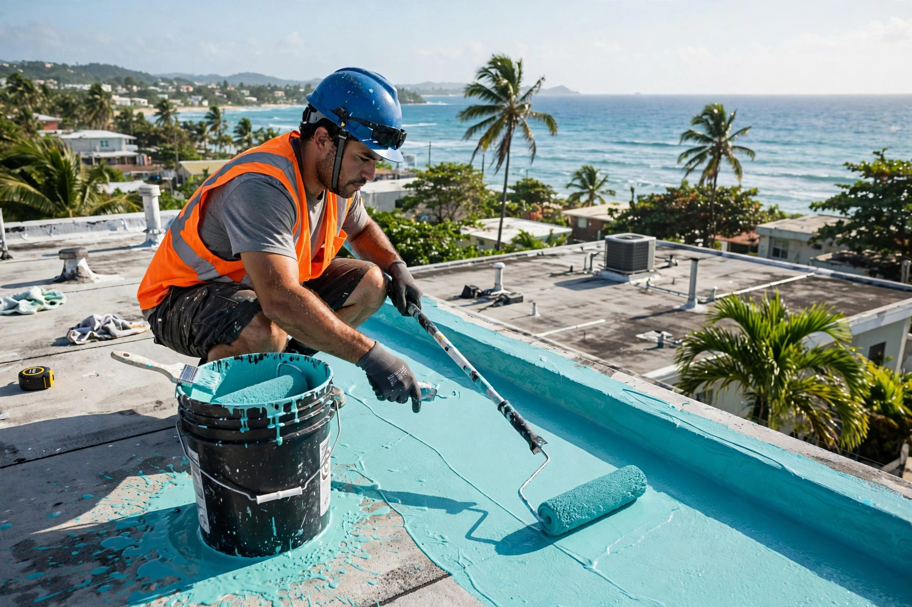
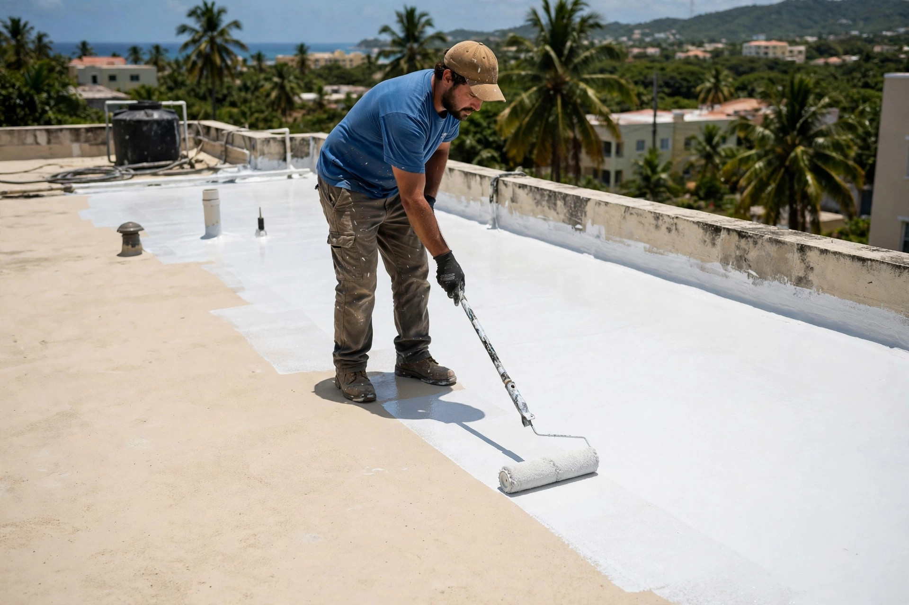
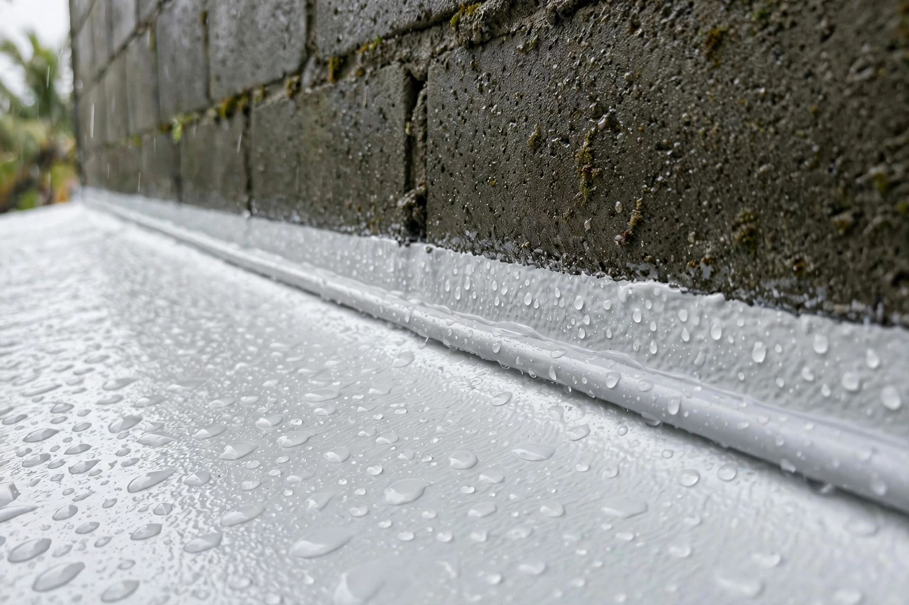

Humacao • Este de Puerto Rico
Resolvemos su problema de filtración. Sellado de techos profesional en Humacao y el este de Puerto Rico.
Nuestro trabajo
Trabajos reales de sellado: aplicación, acabado y detalle profesional.



Servicios
Carr. #3 Ruta 925 Km 3.3, Bo. Pasto Viejo, Humacao
Sellado elastomérico que acaba con las filtraciones de raíz.
Solución definitiva a goteras y humedad en el techo.
Protección total con sistemas de membrana modernos.
Visita y estimado sin costo en Humacao y el este.
Cómo trabajamos
Visitamos tu propiedad, medimos el techo y detectamos filtraciones sin costo.
Te damos precio fijo y alcance claro del trabajo antes de empezar.
Limpieza a presión, reparación de grietas y preparación de superficie.
Aplicación del sistema de sellado con garantía escrita.
Preguntas frecuentes
El costo depende del tamaño del techo, su condición actual y el sistema de sellado que se use. Por eso ofrecemos estimado gratis: visitamos, medimos e inspeccionamos, y te damos un precio fijo por escrito sin compromiso.
Con una buena preparación de superficie y materiales de calidad, un sellado elastomérico profesional puede durar de 5 a 10 años o más, dependiendo del mantenimiento y la exposición al sol.
Sí. Primero localizamos el origen de cada filtración, reparamos grietas y puntos débiles, y luego aplicamos el sistema de sellado completo para una protección total.
La mayoría de los techos residenciales se completan en 1 a 3 días laborables, dependiendo del tamaño y la condición. Te damos un itinerario claro antes de empezar.
Sí. Todo trabajo de sellado incluye garantía escrita. Si aparece una filtración en el área sellada durante el periodo de garantía, volvemos y lo corregimos.
Tu website profesional
Hecha a la medida, lista para recibir clientes por WhatsApp.
Solo la website, sin hosting, sin dominio, sin nada.
Elegir este planIdeal para arrancar con presencia profesional.
Elegir este planTranquilidad por un año: nosotros nos encargamos de todo.
Elegir este planPrecios de oferta por tiempo limitado. Escríbenos y la ponemos en marcha.
Carr. #3 Ruta 925 Km 3.3, Bo. Pasto Viejo, Humacao · 787-800-3174
Cotizar ahora